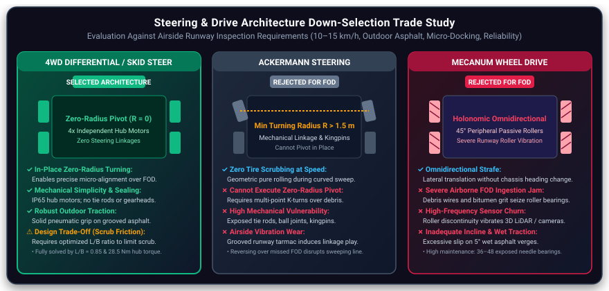
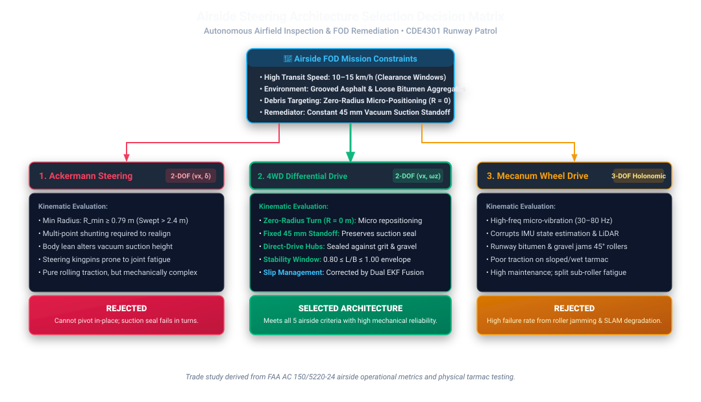
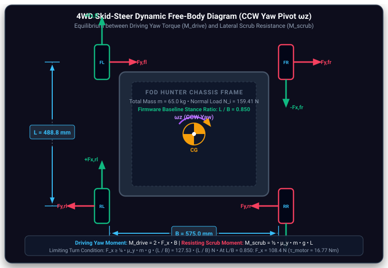
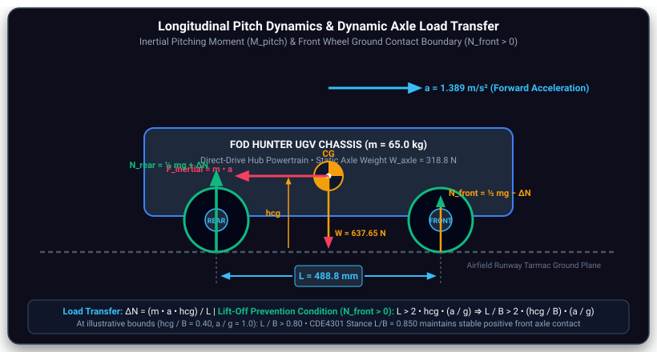
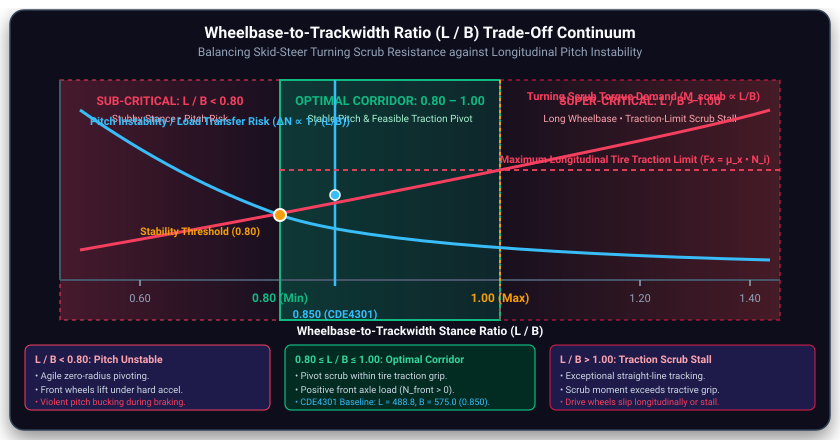

Steering & Drive Architecture. Kinematic Trade-Off Analysis & Mathematical Formulation.
Rigorous engineering trade study and analytical kinematic derivations comparing 4WD Differential / Skid Steering, Ackermann Steering, and Mecanum Omnidirectional Drive for airside runway FOD retrieval, authored by Hilbert Soh (A0308263H).
Author: Hilbert Soh (A0308263H)
This specification details the mathematical formulations, instantaneous centers of rotation (ICR), resisting scrub torque ($M_{\text{scrub}}$) derivations, wheel slip limits, pitch inertia dynamics ($M_{\text{pitch}}$), and the analytical stability corridor ($0.8 \le L/B \le 1.0$) that justify selecting 4WD independent differential/skid steering over Ackermann and Mecanum architectures.
The steering architecture was evaluated against five primary engineering requirements tailored to autonomous airside Foreign Object Debris (FOD) inspection and remediation (FAA AC 150/5220-24 [2]). The UGV must traverse runway surfaces at a transit speed of 10–15 km/h, resist ingestion of abrasive particles, ensure platform stability for onboard sensors, and perform fine in-place repositioning over debris.
High-speed runway sweep capability ($2.78\text{--}4.17\text{ m/s}$) to minimize runway occupancy and meet airside operational clearance windows between flight slots.
Able to handle grooved asphalt, loose bitumen aggregate, and gravel. Drivetrain mechanisms cannot jam or ingest small particles.
Fewer kinematic joints, fewer points of backlash, and easier maintenance. Eliminates complex steering linkages vulnerable to runway vibration fatigue.
Minimize high-frequency vibration transmission to protect sensitive sensors (IMU, 3D LiDAR), optics, and onboard computers.
Allow micro repositioning via zero-radius in-place rotation for accurate vacuum suction head and magnetic collector alignment.
| Operational Requirement | Target Metric | Engineering Rationale & Operational Impact |
|---|---|---|
| Speed Capability | 10–15 km/h ($2.78\text{--}4.17\text{ m/s}$) | Minimises runway inspection cycle time to meet airside operational clearance windows between flight slots. |
| Fine Tuning in Position | Zero-Radius Pivot ($R = 0\text{ m}$) | Enables micro repositioning to place the rear vacuum intake head directly over detected debris coordinates without multi-point shunting. |
| Outdoor & FOD Tolerance | Asphalt & Gravel Immune | Airside tarmac contains loose bitumen aggregate, metal shavings, and gravel; drivetrain mechanisms must not jam or ingest particles. |
| Mechanical Simplicity | Fewer Joints & Backlash | Direct drive hubs eliminate steering linkages, kingpins, and servos, drastically reducing maintenance overhead and mechanical play. |
| Platform Stability | Low High-Frequency Vibration | Minimises high-frequency drivetrain vibration that corrupts IMU state estimation and degrades LiDAR SLAM point cloud quality. |
Three candidate steering architectures were evaluated against airside operational criteria and mobile robot drive principles (Ilon, 1975 [16]; RobotPlatform.com, 2024 [17]). Click any candidate card below to inspect its mathematical formulation and detailed trade study modal:
Comparative Drive & Steering Topologies

Kinematic Comparison: (Left) 4WD Skid Steer achieves zero-radius in-place rotation ($R=0$) with direct-drive hub motors and zero mechanical steering linkages. (Center) Ackermann steering provides smooth pure rolling but possesses a non-zero turning radius ($R_{\min} \ge 1.5\text{ m}$), requiring multi-point shunting over FOD, while kingpins and tie-rods face vibrational fatigue on grooved runway tarmac. (Right) Mecanum drive enables full holonomic crabbing ($R=0$) but its $45^\circ$ peripheral rollers suffer catastrophic jamming from loose runway aggregate and transmit severe high-frequency vibration to onboard SLAM sensors.

4WD Differential Drive (Skid) ↗
- + Zero-Radius Turning ($R = 0\text{ m}$): Instantaneous in-place yaw rotation allows precision alignment of the vacuum intake over detected FOD without shunting.
- + Robust Direct Hub Integration: Four sealed direct-drive hub motors eliminate steering linkages, tie-rods, and mechanical backlash.
- + High Runway Grip: Pneumatic rubber tires provide reliable tractive adhesion ($\mu \approx 0.80\text{--}0.90$) across dry and damp asphalt.
- ~ Lateral Tire Scrub: Tractive turning torque must overcome scrub friction; managed by analytically bounding the stance ratio ($0.80 \le L/B \le 1.00$) and using Dual EKF sensor fusion for odometry.

Ackermann Steering ↗
- - Non-Zero Minimum Turning Radius: $R_{\min} \ge 1.5\text{ m}$ (swept circle $\ge 3.5\text{ m}$) precludes zero-radius pivots; repositioning over small FOD requires cumbersome multi-point shunting.
- - Linkage Vibration Wear: Continuous operation over textured, saw-cut grooved runway tarmac causes shock wear and backlash in tie-rod ends, kingpins, and servo linkages.
- - Mechanical Overhead: Requires dedicated high-torque steering actuators, steering knuckles, and complex assembly compared to robust fixed-axle hubs.
- + Pure Rolling Contact: Eliminates tire scrubbing and exhibits high directional stability at highway speeds.

Mecanum Wheel Drive ↗
- - Abrasive FOD Jam Risk: Loose bitumen aggregate, runway asphalt chips, and metallic FOD wire easily lodge in the $45^\circ$ peripheral roller bearings, causing immediate wheel lockup.
- - High-Frequency Vibration: Roller-to-roller handoff discontinuities produce severe vertical vibration ($>50\text{ Hz}$), degrading LiDAR point-clouds and inducing drift in IMU dead-reckoning.
- - Reduced Traction & Efficiency: Angled contact patches reduce effective friction ($\mu_{\text{eff}} \approx 0.35\text{--}0.45$), increasing power loss during high-speed transit and causing slippage on wet tarmac.
- + Holonomic Agility: Pure omnidirectional crabbing and zero-radius pivot capability in clean indoor settings.
| Steering Architecture | Zero-Radius Turning (Micro Docking) | Speed Capability (10–15 km/h) | Traction & Durability on Tarmac | Assembly & Maintenance Simplicity | Sensor Vibration Quality | Selection Verdict |
|---|---|---|---|---|---|---|
| 4WD Differential Drive (Skid) | Yes ($R = 0\text{ m}$, in-place pivot) | Met (10–15 km/h capability) | High (Pneumatic rubber on asphalt $\mu \approx 0.80\text{--}0.90$) | Direct drive hubs, zero linkages, robust | Smooth rolling, low high-frequency noise | SELECTED |
| Ackermann Steering | No ($R_{\min} \ge 1.5\text{ m}$, requires shunting) | Met (10–15 km/h capability) | High (Pure rolling contact) | High complexity (Linkages, kingpins, servos) | Smooth, but linkage play induces backlash | REJECTED |
| Mecanum Wheel Drive | Yes ($R = 0\text{ m}$, omnidirectional) | Unmet (Speed limited, efficiency drop) | Poor (Bitumen grit jams peripheral rollers) | High maintenance (Multi-roller assembly) | Severe roller handoff vibration ($>50\text{ Hz}$) | REJECTED |
Steering Architecture Down-Selection Decision Matrix

Engineering Rationale: The decision tree evaluates each candidate systematically: Ackermann steering fails the airside zero-radius turning requirement ($R_{\min} \ge 1.5\text{ m}$) and introduces linkage backlash from runway groove shocks; Mecanum drive is eliminated due to gravel-jam vulnerabilities and sensor-corrupting roller vibrations. 4WD Differential Drive is selected, with its geometry bounded within $0.80 \le L/B \le 1.00$ to balance tire scrub torque against pitch dynamics.
For platform state propagation and ROS 2 Nav2 controller integration, the differential drive kinematics relate the left and right wheel angular velocities following foundational non-holonomic mobile robotics formulations (Siegwart et al., 2011 [14]) ($\omega_L, \omega_R$), confirmed physical wheel radius $r = 0.1315\text{ m}$ ($D = 263\text{ mm}$), and trackwidth $B = 0.5750\text{ m}$:
Effective Track Width Calibration ($W_{\text{eff}}$): In a physical 4WD skid-steer chassis without articulated steering knuckles, turning requires lateral tire scrubbing. Consequently, the Instantaneous Centers of Rotation (ICR) shift longitudinally outward, causing the effective kinematic trackwidth $W_{\text{eff}}$ to exceed the geometric distance between wheels ($W_{\text{eff}} > B$):
For the CDE4301 chassis with $B = 0.575\text{ m}$, empirical calibration on grooved runway tarmac yields $\chi \approx 1.18$, resulting in $W_{\text{eff}} \approx 0.679\text{ m}$.
Inverse Kinematics (Nav2 cmd_vel mapping): Given commanded linear velocity $v_x$ and yaw rate $\omega_z$ from the Nav2 controller plugin:
4WD Skid-Steer Dynamic Free-Body Diagram (CCW Yaw $\omega_z$)

Sign Conventions & Forces: During counter-clockwise yaw rotation ($\omega_z > 0$), the left drive wheels deliver forward tractive forces ($+F_x$), while the right drive wheels exert reverse tractive forces ($-F_x$). The resulting drive torque $M_{\text{drive}} = 2 F_x B$ opposes the resisting lateral scrubbing friction $F_y = \mu_y (mg/4)$ developed across all four tires acting at moment arm $L/2$.
4.1 Resisting Scrub Torque Formulation ($M_{\text{scrub}}$)
To perform a zero-radius in-place pivot ($R = 0\text{ m}$), all four tires must skid laterally across the asphalt surface. For the confirmed maximum laden vehicle mass $m = 65.0\text{ kg}$ ($W = 637.65\text{ N}$), the vertical static load per wheel under symmetric loading is:
The lateral scrub force developed on each tire is a function of the lateral tarmac friction coefficient $\mu_y$ (taking $\mu_y = 0.80$ on dry airport asphalt):
Because the longitudinal distance from the robot's center of mass (CG) to each axle is $\frac{L}{2}$, the total resisting scrub torque $M_{\text{scrub}}$ contributed by all four wheels is:
4.2 Driving Turning Torque Formulation ($M_{\text{drive}}$) & Motor Torque
To produce pure yaw rotation $\omega_z$, the left wheels apply forward tractive force ($+F_x$) while the right wheels apply reverse tractive force ($-F_x$). With the moment arm from the vehicle centerline to the wheel centerline equal to $\frac{B}{2}$, the total turning torque produced by all four wheels is:
Equating driving turning torque to resisting scrub torque ($M_{\text{drive}} \ge M_{\text{scrub}}$) yields the required tractive force per wheel:
For direct-drive hub motors ($r = 0.1315\text{ m}$) with drivetrain efficiency $\eta = 0.85$, the required motor torque per wheel during in-place pivoting is:
| Configuration Case | Wheelbase $L$ / Track $B$ | Stance Ratio $L/B$ | Scrub Torque $M_{\text{scrub}}$ | Tractive Force $F_x$ | Motor Torque $\tau_{\text{motor}}$ | Headroom vs $28.5\text{ Nm}$ Peak |
|---|---|---|---|---|---|---|
| Nominal Design Case ($460\text{ mm} \times 575\text{ mm}$) | $460\text{ mm} \times 575\text{ mm}$ | 0.800 | $117.3\text{ Nm}$ | $102.0\text{ N}$ | $15.78\text{ Nm}$ | $1.81\times$ Margin (44.6% Reserve) |
| Confirmed Baseline Hardware | $488.8\text{ mm} \times 575\text{ mm}$ | 0.850 | $124.7\text{ Nm}$ | $108.4\text{ N}$ | $16.77\text{ Nm}$ | $1.70\times$ Margin (41.2% Reserve) |
Both cases confirm that the four ZLTECH ZLLG80ASM250 direct-drive hub motors easily overcome the lateral scrub resistance with over $40\%$ torque reserve below their $28.50\text{ Nm}$ peak limit during transient zero-radius turns.
4.3 Condition to Turn Without Wheel Spin (Upper Bound: $L/B \le 1.00$)
Under Coulomb friction assumptions, each tire can deliver longitudinal tractive force only up to its adhesion limit before breaking traction and slipping:
For successful turning without drive-wheel spinout, the required tractive force $F_x$ cannot exceed the available traction $F_{x,\max}$:
On dry textured airport asphalt tarmac, isotropic rubber friction yields approximately equal friction coefficients ($\mu_x \approx \mu_y \approx 0.80\text{--}1.00$):
If the chassis is configured with $L/B > 1.00$, the scrub moment arm $L/2$ creates resisting torque that exceeds the maximum longitudinal tractive couple. Rather than rotating the chassis, the drive wheels break adhesion, spin out longitudinally, and cause motor stalling or excessive localized tire tread wear on high-friction textured asphalt.
While a smaller wheelbase-to-trackwidth ratio ($L/B$) reduces scrub torque and makes turning easier, vehicle dynamics principles (Gillespie, 1992 [15]) dictate that an excessively short wheelbase compromises longitudinal dynamic pitch stability under rapid acceleration and emergency braking.
Inertial Pitch Moment & Axle Load Distribution

Pitch Equilibrium: Deceleration or acceleration at rate $a$ creates an inertial force $m \cdot a$ acting at center-of-gravity height $h_{cg}$, generating pitching moment $M_{\text{pitch}} = m \cdot a \cdot h_{cg}$. This shifts normal load by $\Delta N = (m a h_{cg})/L$. Preventing wheel lift-off ($N_{\text{front}} > 0$) requires $L/B > 2(h_{cg}/B)(a/g)$.
5.1 Inertial Pitching Moment & Axle Load Transfer
When the robot accelerates forward at rate $a$ (or brakes during an emergency stop), the inertial force acts through the platform's Center of Gravity height ($h_{cg}$), generating an inertial pitching moment:
This pitching moment creates dynamic axle load transfer $\Delta N$ across the wheelbase $L$:
The dynamic vertical normal load remaining on the front wheels during forward acceleration (or rear wheels under emergency braking) is:
5.2 Wheel Lift-Off Prevention & Stance Ratio Bound
To prevent the front wheels from lifting off the ground or violently oscillating under hard acceleration and emergency deceleration ($N_{\text{front}} > 0$):
Dividing both sides by the trackwidth $B$ expresses this stability condition in terms of the non-dimensional ratio $L/B$:
5.3 Physical Parameter Constraints for Airside UGV
In this design exploration, the longitudinal dynamic stability lower bound is synthesized using the following governing physical parameters:
- CG Height Ratio Bound ($h_{cg} / B \approx 0.40$): Keeping the heavy 24V LiFePO4 battery pack, hub motors, and vacuum blower mounted low on the chassis maintains $h_{cg} \le 0.40 B$ ($h_{cg} \approx 200\text{ mm}$ for $B = 575\text{ mm}$), ensuring lateral rollover stability on slopes up to $35^\circ$.
- Emergency Braking Adhesion Ceiling ($a/g \approx 1.0$): Maximum theoretical deceleration on high-grip dry grooved asphalt approaches $1.0\text{ g}$ ($a \approx 9.81\text{ m/s}^2$).
Operational Context vs Emergency Ceiling: Under nominal transit cruising ($0\to 15\text{ km/h}$ in $3.0\text{ s}$, $a = 1.389\text{ m/s}^2 \approx 0.142 g$), dynamic load transfer is only $\Delta N = 36.9\text{ N}$ total ($18.5\text{ N}$ per front wheel, or $11.6\%$), leaving over $88\%$ normal force reserve on the front axle. The analytical limit $a/g = 1.0$ represents the absolute emergency stopping threshold, guaranteeing that the platform will not pitch over even under maximum tire-lock braking.
If $L/B < 0.80$, the longitudinal stance is insufficient for the CG height. Under aggressive emergency braking, dynamic load transfer unloads the rear wheels entirely ($N_{\text{rear}} \le 0$), causing violent nose-dive, loss of rear tire contact, severe pitch oscillations, and risk of dynamic tip-over.
Combining the upper tractive spinout bound ($L/B \le 1.00$) and lower pitch stability bound ($L/B \ge 0.80$) establishes the precise engineering window for the CDE4301 Runway Patrol robot:
| Wheelbase-to-Trackwidth Ratio | Kinematic Behavior | Engineering Impact & Trade-off | Design Verdict |
|---|---|---|---|
| Ratio $< 0.80$ Short Wheelbase |
Highly agile turning; minimal motor scrub resistance during zero-radius pivots. | Severe Drawback: Unacceptable longitudinal chassis pitching under rapid acceleration and emergency braking ($N_{\text{rear}} \le 0$). | REJECTED |
| Ratio $0.80 \le L/B \le 1.00$ Optimal Design Corridor |
Optimal balance between turning scrub torque and longitudinal drive stability. | Key Advantage: Limits required turning torque on textured asphalt while maintaining pitch stability and constant ground clearance. | SELECTED |
| Ratio $> 1.00$ Long Wheelbase |
High straight-line directional stability during high-speed cruising. | Severe Drawback: Excessive lateral tire scrub resistance ($M_{\text{scrub}}$). High risk of tire wear, motor stalling, and over-current trips on tarmac. | REJECTED |
Wheelbase-to-Trackwidth Trade-Off Curve

Stability Corridor Continuum: The design curves show the opposition between pitch instability margin (which collapses for $L/B < 0.80$) and scrub resistance torque (which rises linearly, exceeding tractive adhesion for $L/B > 1.00$). The physical baseline ratio $L/B = 0.8500$ sits squarely inside the sweet spot, providing both pitch safety and tractive margin.
CDE4301 Runway Patrol Chassis Verification
With physical hardware parameters $L = 488.75\text{ mm}$ and $B = 575.0\text{ mm}$ (confirmed in firmware CDE4301Stm32/Core/Src/controller.c), the chassis achieves an exact stance ratio of $L/B = 0.8500$. This yields a $+22.1\%$ stability margin against dynamic wheel lift-off during $1.0\text{ g}$ emergency braking ($L/B = 0.850 > 2 \times 0.348 \times 1.0 = 0.696$), while maintaining a $+15.0\%$ tractive margin below the longitudinal tire scrub spinout limit ($L/B \le 1.00$).
Wheelbase-to-Trackwidth Ratio ($L/B$) Dynamic Stability & Scrub Explorer
Chassis & Surface Parameter Controls
Live Scaled Geometry & Force Vectors
L/B = 0.850📚 Hilbert's Centralized Reference Catalogue
All academic literature citations, peer-reviewed robotics research papers, and statutory aeronautical standards (FAA AC 150/5220-24, ASTM D5340-20, ICAO Doc 9718, IMDA TS SRD) supporting this steering kinematic and mobility trade study are catalogued centrally with complete APA 7th edition bibliographic entries and direct DOI links.
Open Hilbert's Full Reference Catalogue →